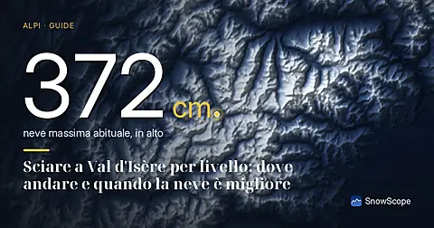
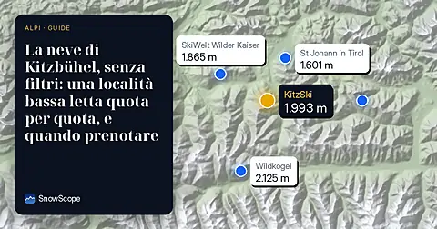
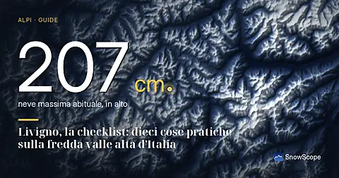
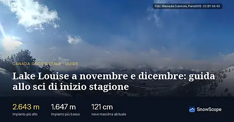
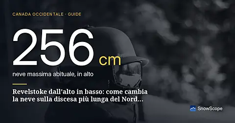
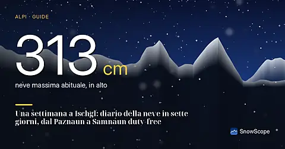
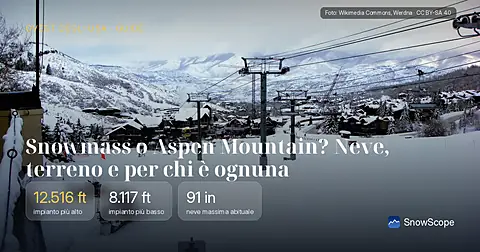
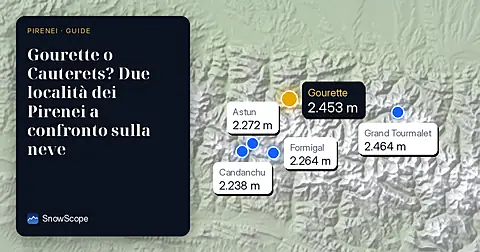
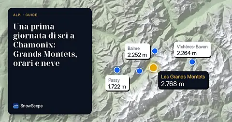
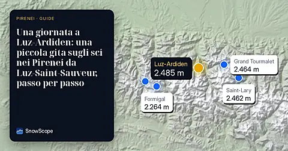

Bollettini neve · Inverni passati
Bollettini neve quotidiani per sciatori: dove c'è neve, cosa arriva e dove sciare, dalla mappa neve di SnowScope e dalle stazioni di misura. Ogni numero viene dai dati del giorno.

Abbiamo confrontato la neve del 10 novembre con la neve più alta di ogni inverno in 46 stazioni sciistiche, su 46 inverni. Un inizio nevoso aiuta, ma meno di quanto pensino molti sciatori.

Tre inverni magri di fila sono finiti nel 2025-26; questo autunno è cominciato in modo normale.

In 24 inverni su 46 le località del versante italiano e delle Alpi meridionali francesi hanno avuto un inverno relativamente più ricco del versante nord. Il grafico, le grandi annate e il tempo che le ha prodotte.

A dicembre la neve dipende prima di tutto dalla quota. 46 inverni passati in 676 stazioni delle Alpi mostrano quanta neve aspettarsi il 1°, il 15 e il 22 dicembre, da sotto i 1.200 m a oltre i 2.400 m.

Vail in numeri: picco abituale di circa 64 in (162 cm) a metà montagna in 46 inverni passati, marzo il mese più nevoso, più terreno, accesso e sicurezza.


Steamboat, Colorado, per famiglie: cosa va bene per i più piccoli, i bambini, i ragazzi e i genitori, con la neve di 46 inverni passati a tre quote.

Verbier va bene per i principianti? Quando la neve è migliore? Come si arriva? Risposte sulle 4 Vallées e su 46 inverni passati.

Come passare il primo giorno a Park City Mountain, Utah, e quando andarci: il nostro storico dà circa 71 in (180 cm) come picco abituale a metà montagna in 46 inverni passati.

Il Sellaronda da Selva (Sëlva) in Val Gardena: passi Gardena, Campolongo, Pordoi e Sella in ordine, con il nostro storico neve di 46 inverni passati.

Mt Baker, Washington: circa 133 in (337 cm) di picco abituale a metà montagna in 46 inverni passati, un record mondiale di neve, nessun alloggio in quota.

Val d'Isère e l'Espace Killy per principianti, sciatori intermedi ed esperti, con la neve di 46 inverni passati a tre quote.

Pianifica Mammoth Mountain per stagione: circa 93 in (235 cm) di picco abituale a metà montagna in 46 inverni passati, marzo il più nevoso, primavere lunghe, inverni variabili.

Kitzbühel è famosa e bassa. Che cosa dicono 46 inverni passati della neve a 762 m, 1.377 m e 1.993 m, che cosa è cambiato e quali settimane sono la scommessa più sicura.

Dieci punti pratici per una vacanza sugli sci a Livigno: le strade, il freddo, i negozi duty-free, i due versanti e il periodo migliore per la neve, da 46 inverni passati del nostro storico.

Whistler Blackcomb per ogni livello, con il nostro storico: circa 370 cm di picco abituale a metà montagna in 46 inverni passati, marzo e aprile i mesi più nevosi.

Una lista pratica per Stowe, Vermont: strati, protezione del viso, maschera, lamine affilate e scaldamani, legata alla neve di 46 inverni passati sul Mount Mansfield.

Sciare a Lake Louise a inizio stagione: perché parte presto, com'è di solito la neve di novembre e dicembre in 46 inverni passati e come sciare su un fondo ancora sottile.

Cosa è vero di La Grave, la montagna del fuoripista sotto la Meije: terreno, sicurezza, neve per mese e tendenza, da 46 inverni passati.

Big Sky, Montana, facile da immaginare: 5.850 acri sotto il Lone Peak, e una neve circa cinque volte più spessa vicino alla cima che alla base in 46 inverni passati.

Sciate prima con la mente tutto il dislivello di Revelstoke: la neve in cima, a metà montagna e alla base in valle in 46 inverni passati, e quando ogni parte è al meglio.

Sette giorni nella Silvretta Arena, uno alla volta: dove è la neve, quando passare a Samnaun e che cosa dicono 46 inverni passati della neve di Ischgl a tre quote.

Aspen Snowmass a confronto: Snowmass ha circa 75 in (190 cm) di picco abituale a metà montagna in 46 inverni passati, Aspen Mountain circa 69 in (174 cm).

Gourette e Cauterets a confronto: quote, neve abituale per mese, settimane migliori e come arrivare, da 46 inverni passati.

Mad River Glen, Vermont: neve naturale, circa 30 in (75 cm) di picco abituale a metà montagna in 46 inverni passati, febbraio il mese più nevoso. Tre modi per organizzare la giornata.
Banff Sunshine Village mese per mese: circa 100 cm a metà montagna in un marzo abituale in 46 inverni passati, aprile il più nevoso in alto, stagione fino a fine maggio.
Alpe d'Huez guarda il sole. Come organizzare la giornata per ora e quota, con la neve di 46 inverni passati dai villaggi bassi al Pic Blanc.
La nostra serie di 46 inverni sulle Alpi, 108 punti da 667 a 3.872 m: meno giorni di neve ovunque, in modo netto nell'81 %. Cosa è cambiato e perché.

Baqueira-Beret è nella Val d'Aran, sul versante atlantico dei Pirenei. Che cosa significa per la sua neve, verificato su 46 inverni passati contro La Molina, e quando andare.

Come passare una prima giornata di sci a Chamonix, dai Grands Montets sopra Argentière al momento giusto per ogni pendio, con 46 inverni di dati sulla neve.

Cortina d'Ampezzo in tre modi: Tofana, Faloria-Cristallo e Cinque Torri-Lagazuoi, con 46 inverni di dati sulla neve a tre quote.

Chantarella, Marguns, Piz Nair, White Turf: le parole che si sentono a St. Moritz, spiegate, e cosa dicono 46 inverni passati del nostro storico neve su ogni quota della Corviglia.

Davos e Klosters condividono sei montagne dello sci. Un piano giorno per giorno, partendo dal Parsenn, con quello che 46 inverni passati del nostro storico dicono delle sue quote.

Quando prenotare Courchevel e le 3 Vallées, quale paese scegliere e dove la neve resiste, da 46 inverni passati.

St. Anton e Ski Arlberg lungo l'inverno: l'altezza neve abituale ogni mese a tre quote, da 46 inverni passati.

Un anno di neve a Sölden, fase per fase: quando i ghiacciai si imbiancano, il weekend di Coppa del Mondo, il cuore dell'inverno e le settimane di primavera, da 46 inverni passati a tre quote.
Meno giorni di neve in tutti i 120 punti studiati sui Pirenei dal 1980-81, soprattutto sotto 1.500 m: la nostra serie di 46 inverni e la ricerca.

Un taccuino pratico su Oukaïmeden, nell'Alto Atlante: quando arriva di solito la neve, quanta, quali pendii scegliere e come arrivare da Marrakech.

Come vivere una buona giornata a Luz-Ardiden, piccolo comprensorio sopra Luz-Saint-Sauveur negli Alti Pirenei: la strada, i due settori, la neve di 46 inverni passati e le settimane da scegliere.

Michlifen, vicino a Ifrane, ha neve a brevi episodi più che una stagione. Che cosa mostrano 46 inverni passati, perché l'altezza abituale è zero e come esserci nei giorni giusti.

Tre modi di passare una giornata da Méribel: a est verso Courchevel, a sud verso Val Thorens, o in casa sul Mont Vallon, con la neve di 46 inverni passati a tre quote.